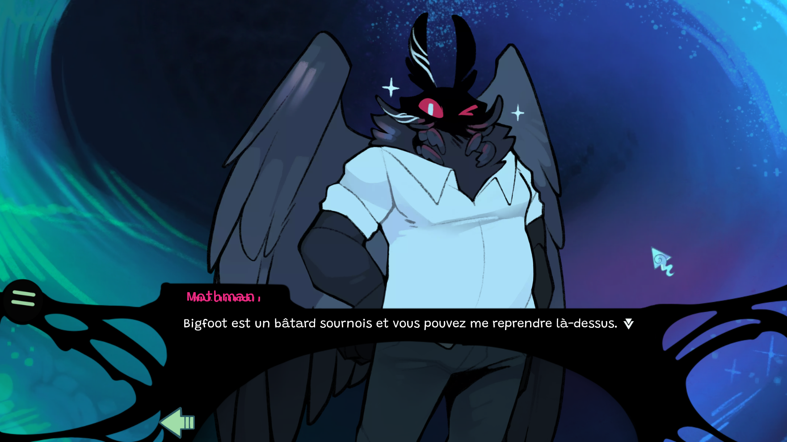
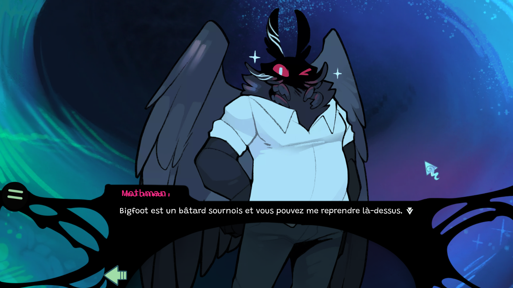

Logs de developpement
- Avant-première de Lune froide
- Furush Chapitre 1 Info
- Appel à casting - Partie 2
- Mise à jour de Boss Fright
Téléchargement
- Windows v1.6
- Mac Indisponible
- Linux Indisponible

 
